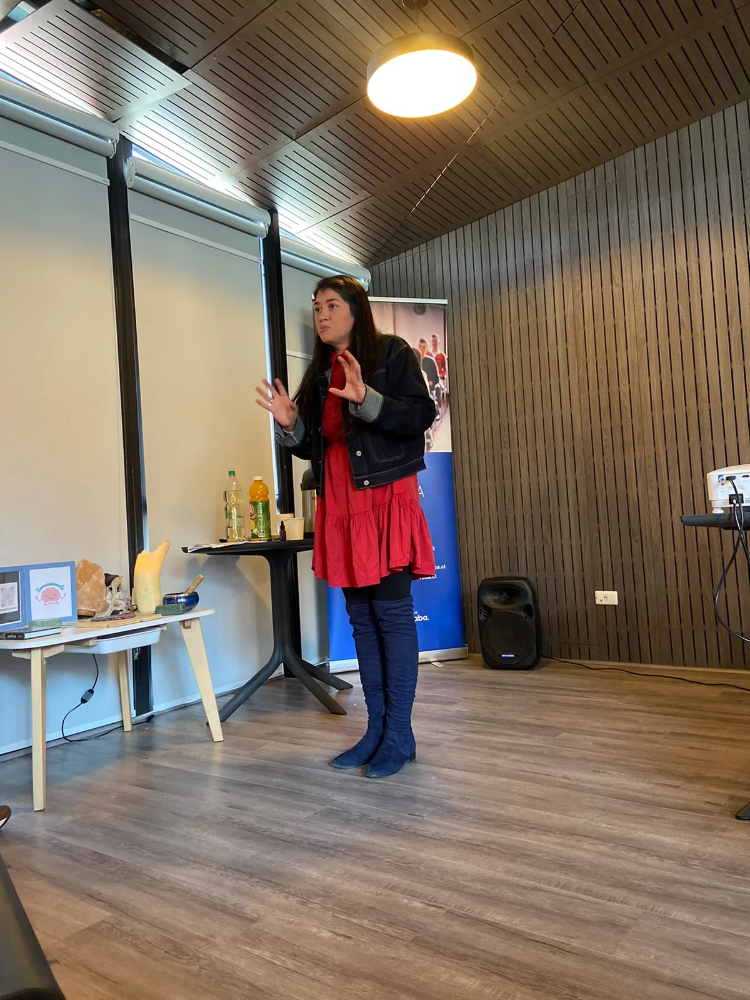
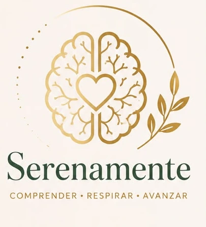
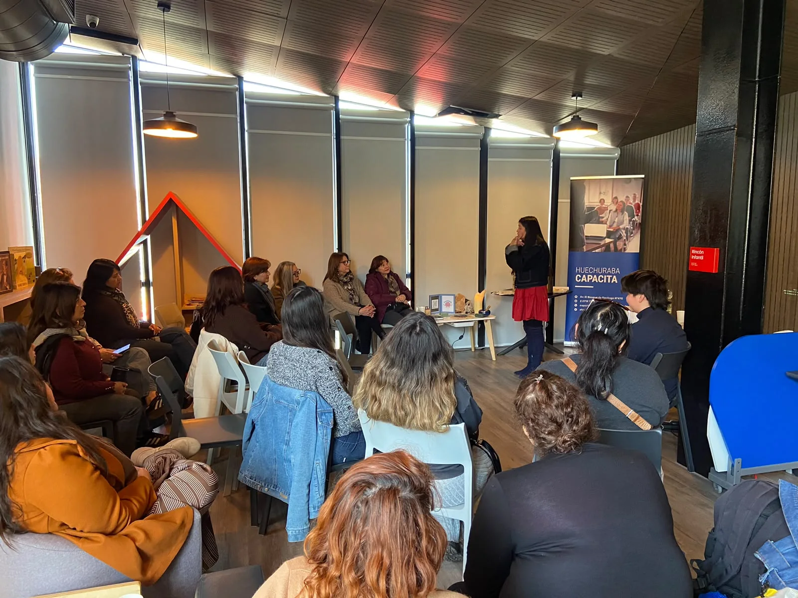
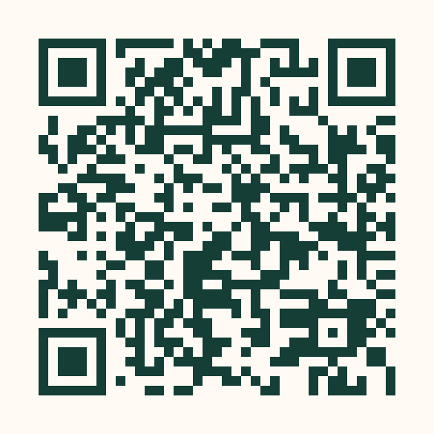

La regulación precede al cambio
Primero creamos condiciones de seguridad y estabilidad.
Experiencias restaurativas · Acompañamiento preventivo
Serenamente diseña experiencias seguras y humanas que integran ambiente, cuerpo, comprensión y herramientas prácticas para la vida cotidiana.
No reemplaza la psicoterapia ni realiza diagnósticos.


Respirar para avanzar · Primera experiencia Serenamente
01 · Conocer Serenamente
El Método Serenamente es una metodología estructurada de acompañamiento preventivo diseñada para conducir a una persona desde un estado de activación fisiológica y sobrecarga emocional hacia un estado de regulación profunda, bienestar psicológico y mayor sensación de seguridad interna.
Su propósito es crear un espacio seguro donde cuerpo y mente puedan disminuir su nivel de alerta, recuperar recursos internos y aprender herramientas aplicables a la vida cotidiana.
“La regulación no constituye el final del proceso; constituye el punto de partida desde el cual una persona puede volver a relacionarse consigo misma con mayor claridad, seguridad y compasión.”
Núcleo Maestro Serenamente
Primero creamos condiciones de seguridad y estabilidad.
Una explicación clara puede disminuir culpa y abrir compasión.
Respiración, postura, sonido y atención ayudan a regresar al presente.
Nadie tiene que exponerse para participar de una experiencia.
La experiencia protege el respeto, la privacidad y el ritmo personal.
02 · Explorar experiencias
Próxima experiencia · 1 de octubre de 2026
Dos generaciones, un encuentro presencial para detenerse, escucharse y conocerse desde una nueva perspectiva.
Adolescentes de 12 a 17 años + un adulto significativo.
Visitar la página de CONÓCEMEPrimera experiencia realizada
Una experiencia vivida en comunidad que abrió un espacio para comprender el estrés, practicar una pausa consciente y recuperar claridad antes de continuar.
Registro real autorizado por Serenamente.



03 · Conocer la metodología
Entorno y facilitación trabajan juntos en un recorrido de siete fases. Ningún elemento se incorpora por azar.
Un contexto que transmite calma, acogida y previsibilidad.
Una bienvenida respetuosa, sin exigencias ni apuro.
Dejar gradualmente el ritmo exterior.
Recursos seleccionados para favorecer seguridad y calma.
Sostener una calma consciente, sin desconexión.
Reconocer la experiencia sin exposición personal obligatoria.
Regresar a la vida cotidiana con recursos concretos.
04 · Talleres institucionales
Serenamente puede adaptar el contexto y los recursos de una experiencia a las características de una organización, manteniendo la seguridad, la coherencia metodológica y el respeto por quienes participan.
05 · Contactar
Cuéntanos brevemente para quién imaginas la experiencia. Podemos comenzar con una conversación sencilla y sin compromiso.

Escanea para seguir el contenido de Serenamente